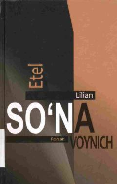

SXIX asr Italiyasida kechgan murakkab taqdirlar va sadoqat haqidagi klassik roman.
Ingliz yozuvchisi Etel Lilian Voynichning ushbu mashhur romanida XIX asr Italiyasidagi voqealar tasvirlangan. Asar yosh Artur va ruhoniy Montanelli o'rtasidagi murakkab munosabatlar, diniy qarashlar, sadoqat va insoniy kechinmalar haqida hikoya qiladi.